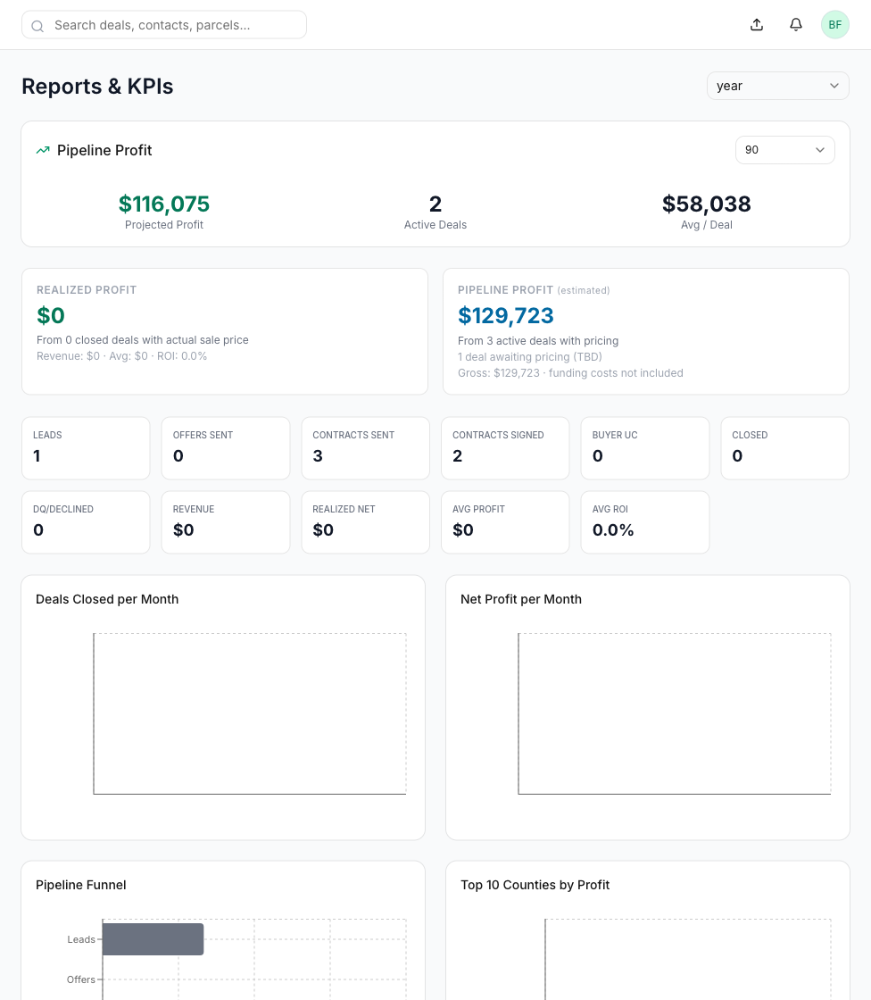

Neuruh
AI systems that do real work — and prove it.
Neuruh turns messy real-world information into evidence, governed decisions, workflows, and measurable outcomes. Every action is checked. Every result leaves a receipt.
1 product in production · 5 sealed candidates · 18 live services · 36 open-source repos
receipts on /proof · as of 2026-08-24
REC County deed record
MAP Parcel geometry
SIG Distress signal



AUTHORITY
CHECKED · 2026-08-24
RECEIPT · VERIFIED
actionoffer.prepared
authoritygranted · scoped
outcomerecorded
sha e2b71fa · court 1,510 green